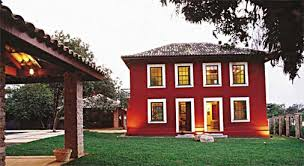
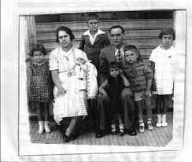
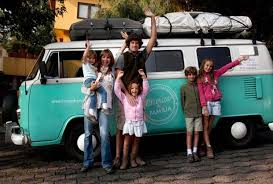

Uma história de desafios e coragem,recheada de sabores e amor.
1931
Na Fazenda Barro Branco em Taboão, São Paulo, nasceu Catharina e mais 13 irmãos, filhos de Luigi Tacco e Luzia Marques.
1940
Uma das últimas fotos da família na fazenda Barro Branco, neste ano eles se mudariam para Nova Tguaçu sem notícia da guerra que se desenrolava na Europa.
1949
Foi neste ano em Nova Iguaçu, que Catharina aprendeu a modelar os doces em formato de vários bichinhos, e para ajudar a família na renda da casa, começou a vender doces pela cidade.
1955
A freguesia aumentava, quando Catharina reuniu a família toda e foi para a capital brasileira.Iniciava-se uma nova etapa de sua vida em Brasília.Fundou a Buffest neste mesmo ano.
1959
Catharina realiza sua primeira festa completa. Foi um casamento na Associação Médica de Brasília. Na foto, a entrada da garçonete com as bandejas de doces.
1994

Mais um grande sonho de Dona Catharina e família é realizado: a inauguração do prédio da Buffest. É até hoje o principal e mais estruturado salão de festas de Brasília.
2000

A Buffest é o primeiro Buffet do Brasil a receber a certificação ISO 9001, sendo recertificado na mais recente edição.
2012

A Buffest recebeu o Prêmio Regional da Qualidade e Produtividade, reafirmando a busca constante de melhorias em seu processo produtivo.